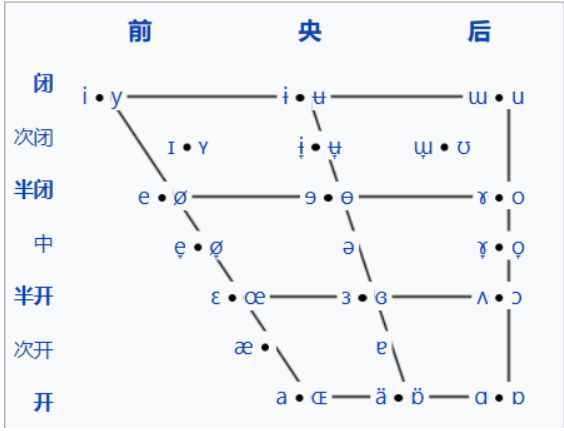

赵元任教授以口语般的讲述方式，极其亲切地对语言学的各领域做了一次简述，内容之广度甚至延申到了相关的信号学、声学，无愧于书名“语言问题”。
这篇笔记的内容只限于语言的部分，即语言学导论的部分，还参考了其他一些导论。（如An Introduction to Language (Victoria Fromkin） 未记录的书中如符号学、汉语历史等内容，读者可自行阅读。
Phonetics
这一学科主要研究语音的物理（声学）属性、发音方式还有在听觉方面呈现的事实。
（此处应该有一张口腔解剖图，但我懒了）
(此处应该也有parametric diagram的介绍)
我们平常接触的大多数语音是肺部发出的音（肺音？），气流从喉部经过声带(vocal folds)，直达口腔(oral cavity)或者鼻腔(nasal cavity)
这里，我们可以初步分出两类调音方式：声带振动与否，以及产生共鸣的腔体。
辅音（consonant)是气流受到阻碍时发出的音。这类音往往持续时间很短；相反**元音(vowel)**则是气流不受阻碍时发出的（乐）音。
单音
consonant
在口腔内部，舌头是主动的调音部位，齿龈、腭以及小舌是被动的调音部位。
口腔内的调音方式有：
-
成阻时，气流完全受到阻碍，所发出的音 塞音（plosive）
-
气流不完全受阻，通过调音部位之间的窄缝发生摩擦，得到擦音(fricative)
（对于舌尖音，这时如果气流较强，会使得舌头发生振动，即与调音部位反复碰撞，产生颤音(trill)）
-
气流不完全受阻，从舌头两旁而非中间发出，形成边音（lateral）
-
调音部位之间缝隙较宽，产生近音（approximent）
-
口腔关闭，气流通过鼻腔成阻，发出鼻音（nasal）
各辅音可以调音部位和调音方式的矩阵确定。
vowel
元音由舌位的高低(中)、前后(央)，以及唇形(平圆)确定。
不同舌位的练习也就是要从生理层面考虑不同受力点，舌位的前后也就是施力部位（舌尖和舌面）的区别。由于舌头是一个整体，舌面或舌根的移动当然会伴随着口腔内部的移动，往往越靠后的元音越会伴随着唇形的变圆。
值得练习的cardinal vowels（基础元音？）有：[i] [e] [ɛ] [a] [ɑ] [ɔ] [o] [u] 1
另外的音还有英语中常出现的“短i”[ɪ]（与"长i"[i]相比）
还有一个出现频率非常高的中央元音[ə]，以至于有一个词 (schwa) 来描述它。2
复合音
在这一范畴，我们有塞擦音(Affricative)
怎么确定一个音是否不可再分呢？一个判断的方法是对其进行反演变换，若倒放后的音不保持波形图不变，那么这个音就可以被分解成更小的音。
比如对音节[ʦa]倒放，其语音是[ast]，听觉上能感受到摩擦和爆破的先后顺序。
另外，送气音 (aspiration) 是一个复杂的现象，它不是某一个音的属性（比如音调），当我们发一个清音时，[pa]，发音和声带振动是同一时间进行的，而发浊音[ba]时，声带提前振动。而发送气时，发完辅音的约$\frac{1}{20}$s后声带才开始振动。中间是会有气流的。这也是为什么送气音会用喉音[h]作为上标来记录。
因此，[pʰa]的倒放更像是[aɸp]，而不是~~[apʰ]~~
杂谈
在GA中我们经常听到r化元音[ɚ]（舌尖再抬高接近上颚可以得到另一个音）这种记录往往作为一种附加属性，相似的还有其他符号和概念（比如无声除阻），我们会在之后的语音学以及IPA学习中进一步涉及。
而关于语音的练习，可以通过声学的方式辅助，包括用语音学生常用的频谱分析软件Prrat观察自己的语音波形图来纠正语音(尤其是清浊)，使用parametric diagram来记录音段。更具体的方法可以参考修读语音学的学生是如何学习语音、训练发音的？ - 知乎 (zhihu.com)
对于最常识性的IPA符号的练习，我强烈安利这个网站:IPA Online - Practical exercises (ncl.ac.uk)
Phonology
phoneme
在音系学的探讨中，我们忽略一部分语音的物理或听觉属性，从而考虑其对所指的映射关系，也就是考虑到了语音之间的整个表意系统。
A phoneme of a language or dialect is an abstraction of a speech sound or of a group of different sounds which are all perceived to have the same function by speakers of that particular language or dialect
在法语中，[mwa]表示我的宾格，而[mwɑ]表示月份，发错音会导致意义混淆，然而在汉语中无论发[ba]还是[pɑ]，却都是"父亲"的意思。这启示我们，如果音的改变不会使得意义改变，那我们当然可以在抽象意义上把它看成“同一个音”。
不要忽视这种简单化研究对象的处理方式的作用，它能帮助我们走的更远。(如果学过一点抽象代数，那就知道这其实也就是商映射的应用之一。)
音位往往是非单射的，一个音位内的元素叫做allophone(同位异音)
如何判断音位呢？自然的想法就是找到一个最小对（minimal contrast），即相同的语言环境下，语音改变使得意义改变的两个音，叫做对立分布。反之，allophone之间的关系是互补分布。（互补的意思是，一种语言环境只能出现唯一的一个，/k/在单词开头时一定是送气音）
总之，关于音位的内涵，我们要考虑的是两点：
- allophone彼此听起来相似
- allophone呈互补分布。
要注意的是判断音位时要考虑的是最小对即复合音，而不是单个音，（毕竟音节是连续的），比如[kat],和[kit]中，前面的[k]带上了一点[a]的属性，后面的[k]带上了一点[i]的属性，但听起来总是相似的。
因此，我们有音位/l/=[l]or[ɫ] ，但没有[h]和[ŋ]构成的音位，哪怕它们有互补的关系，但是听起来不相似。
补充
言语的系统总归不是纯粹的。留心便可看见混乱的地方。allophone之间无法区分出意义高低，曾经有人试图把在某一音位中出现最多的送气音称为"主要的音"，但毫无意义，最终只能承认，不同allophone的地位的等价的。
在日语中，有[ta][ti][te][to]，但是在[u]的部分却只有[tsu]，为了研究意义，也就当成了/tu/的音位来看待。
在英语中，有的语音永远是以浊音的形式呈现的，而没有与之对立的清音。
这种混乱或许是一种科学对现实的妥协，但少许无规律的东西还是很让人不悦。
suprasegmental elements/prosodeme
作为附加属性的调，虽然在物理上是与声音同时进行的，但表意不同，我们称其为segmental phonemes（音段音位） 这种音位的集合叫做suprasegmental elements(超音段音素)
tone
音调
总得来说这是一个挺麻烦的东西（至少对我来说），它指的是通过音高变化来区分意义的一种语音现象。
汉语中的调是词素内的调（音调），大致被划为我们所熟知的四声（还有一个轻声的音位即自然发出的音，北京话似乎多一点。（在"吗""欸"这样的词也是轻声））： 阴平[55:] 阳平[35:] 上声[214:]&[21:] 去声[51:]
词素之间的组合会使得调发生一些改变，比如双音节词中第一个词往往会轻一点，第二个词会重一点。上声这时候就是[21:]了。（试着说"买马"）
英语(GA,RP)中的调是词之间的语调 在表达疑问时，GA的语调逐渐上升，而RP会在重音处先下降再上升。
stress
accent还有"口音"和"高低"的意思，我们单独用stress表示重音。
中文里的重音是提高了音的相对距离，即高的音更高，低的音更低。而英语里的重音是提高振幅和音值。
音长
有的语言的音位包括长短音。比如德语(不熟，无例子)。
英语中的所谓"长o" “短o"似乎还伴随着语音的改变，不能视作音长。
在日语中我们能看到这样的长音： ookii，似乎o的调有点像阴平,i的调有点像去声。相似的变调现象还有很多。这代表日语之间存在字的声调吗？ 这样归类的话似乎会使得日语音系变得复杂，因此另一种做法是把长音oo看成调不同的[o]的相加（さい的两个音节就是这样做的），归类到语调那里去。
juncture
对比汉语“发难”和“翻案”，在快速讲述的时候，这里有一个音节混淆的问题。在英语中则是 a nice man 和an ice man，音系学把这样的现象记录为[ə+nais+mæn]和[ən+ais+mæn]，认为这之间的“停顿”即[+]也是一个音位。
当然，汉语中一般对于音节之间有明显的界限，或者可以认为元音声母之前有一个喉音音位/？/
Morphology
形态学考察被我们称作词(word)的音节复合体的结构。
在词"syllable” “computer"中，我们或多或少地发现可以拆分的地方。前者单独成词，而后者可以分为"com-“和"puter”，我们当然想要找到研究对象的单位，意义似乎是一个可以采取的标准。于是这里我们定义：
词素morpheme是语言中最小的意义单位。
morphome
然而，如何判断词素？归根到底什么是词素的意义？我们需要付出些许思忖。这里有一种脱离研究的危险：如果深入探讨，那么研究可能将会变成哲学或是社会学的范畴。 一个稳妥的方式是，不研究意义，而研究意义的异同：若非外延相同，否则就是不同的词素。(从这里可以看出索绪尔的影子) 比如"美"和"好看”，虽然有相同(相似)的意义，但一个是单词素一个是复词素，所以外延不相同（如果要区分单复数的话）
词素内部可能有多个音节，单独的音也会变。比如中的[s]和中的[z]，这些音显然不能看作同一音位，但由于表达相同的意义（复数）。我们记作同一形态音位morphophonme
集合内的元素叫做morph（同位语？形态同位异音？）
word& grammer structure
我们知道，能指和所指的关系是任意的。词素和意义也是任意的，但词素之间的连结不是任意的。（显然，最简单的关系是意义的"相加"）
这里做出一些区分，我们称词汇为一种语言的所有的词。 lexion是所有语素的集合，而广义的词汇vocabury包括一些非相加词素意义的词(打+听$\neq$打听)
词的语法结构有这么几种：
- 语序（order） 例子：Is he 和 he is，用功和功用
- 音调（tone） 广义的音调包括轻重音。 <tran’fer>名词,<‘transfer>动词
- 音变(phonetic modification) 这里不是指音位的改变，而是指同一个词的语法范畴的音的改变 man-men rebel/ri’bel/动词；rebel/‘rebl/名词 中文里的音变大抵不是主要的，但也有比如<种>上声，名词；去声，动词
- 词类(word class) 这个词类指的是所有类的集合。
附录:以英语为例谈学习语言
我始终相信，在具体的学习实践之前掌握一定的认识论是很有帮助的。在语言学中的认识论首先是：认识到语言的任意性。用索绪尔的话讲就是“能指与所指的关系是完全任意的”。这表明各种言语现象可能是混乱的，但却也有着一种特定的自由：我们无往不处于母语的枷锁中，在学习外语时也会受其影响。我们会未经思考而把既定的音代入外语文字中，而不考虑它们语音和音系属性的区别；我们会囿于汉语文字的表意方式，忽略外语文字的表音属性；有人对于外语的词只能翻译到本国词汇来对应。认识到语言的任意就是要打破母语的这种"既定"的束缚。这也是为什么学习语言往往被认为是打破偏见。可是从另一种层面，脱离惯性、质疑常识本来不就是学习吧？
一定程度的认识能够再生产我们对专一化工具的需求，而工具的革新当然能提高效率。语音学的工具是IPA.
无论是否用作交流，学习语言应当从语音开始，至少对于所谓大多数文字都是“表音”的语言来说。只学文字的话会忽略大量的信息和娱乐来源（视频、歌曲）。而且，在这之后，匮乏的言语认识往往会限制人对所指(意义)的摄取。就以最常见到的冠词a/the与介词of为例。词的间隔蕴含了一种对称的意味，使我们忽略了其在主题中的地位。然而一段语流中这些语法词是存在是十分短暂的，这启示我们在阅读/听写中也采用相似的略读方法。
我想象到的学习顺序是:（学完IPA后）
$Orthography \to Phonology\to Morphology \to Synatx$
即先学习能指间的对应关系(音—文字)，然后分别学习音的表意方式（记录音位、语调），字的表意方式（词素、语法）
练习辅音时，需要注意分别放在元音前后练，这样适应音节的发音。练[rɑ]和[ɑrɑ]，检验音节末的辅音的方式也是发一个元音，看它是否呈现出相同的听感。
另外，在学习外语时参考母语也是有必要的。不是说将母语的映射迁到外语，而是通过「 对比」的方法考察不同文化之间的表意(音)结构3。谈到为什么这么做时，我们不会引用弗雷格、维特根斯坦，从而上升到语言哲学的层次：光是能够发现结构之间的相似性就足以发挥作用、振奋人心了。
作为参考，推荐阅读汉语拼音与国际音标对照表（简明表格版） - 知乎 (zhihu.com)，以及各语言的正字法、音系wiki
英语中的音系现象是：
清浊对立
轻、重音（虽然对立的情况少，但重音弄错可能会让人听不懂）
连读(linking) 辅音之后的元音是连续的，这与汉语中的音节直接的断裂（有喉音[ʔ]）有区别。
另外，法语中的 加连音(liaison) 是指， 一些掉了的音的重新出现的现象。比如pas[pɑ]在连元音（比如encore）后恢复成[pɑz], 在英语中比如$one \to a \to an$
还有的比如[t,d,s]遇到[j]时候的颚化[t͡ʃ]；GA和RP之间有一些区别，比如GA中的[ɹ]在英国南部中掉落。
未来的我：什么举例嘛，完全就是只写了些特点而不谈方法嘛（大嘘）